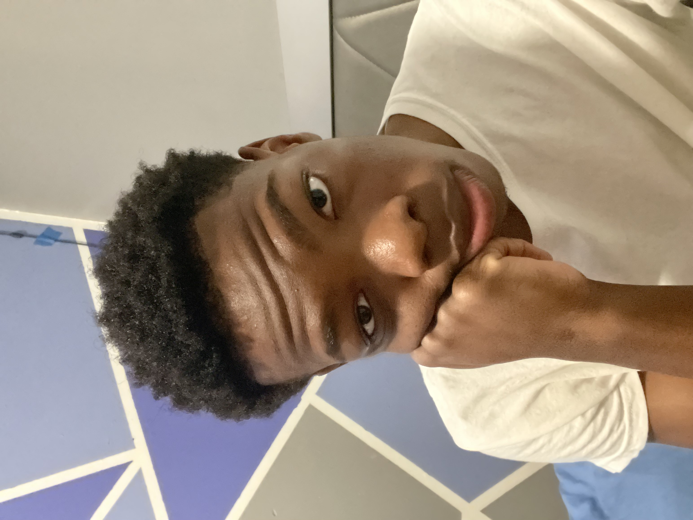

Welcome!
All about me
My name is Wesley Ihezuo, I am 17 years old and attend The Brooklyn Steam center located at Navy Yard. I am a full-stack development student learning the basics of HTML, Python, and CSS. My main passions and interests are anything that is related to tech and as I grow older I have dreams of becoming a software developer

Typically I'm like your average high school student with the everlasting hopes of creating a successful future for myself.
I have many hobbies which include, sports, watching anime, weight lifting, video games, graphic design, etc. My favorite sports are track and basketball, currently, I am on my school's track team as a sprinter and I play basketball at my local school gyms to sharpen my skills as a player. I hope to become somewhat athletic as I approach my freshman year of college hence why I indulge myself in sport-like activities. When I'm not doing sports I watch anime. My favorite animes are Naruto, Tokyo Revengers, and Hunter x Hunter. I also love to participate in many extra-circular activities at school and at home. Here is a list of activities I have done in the past and am currently doing as of right now.
- Podcasting
- Track & Feild
- BC Step
- Weight Room
- Robotics
- Tutoring